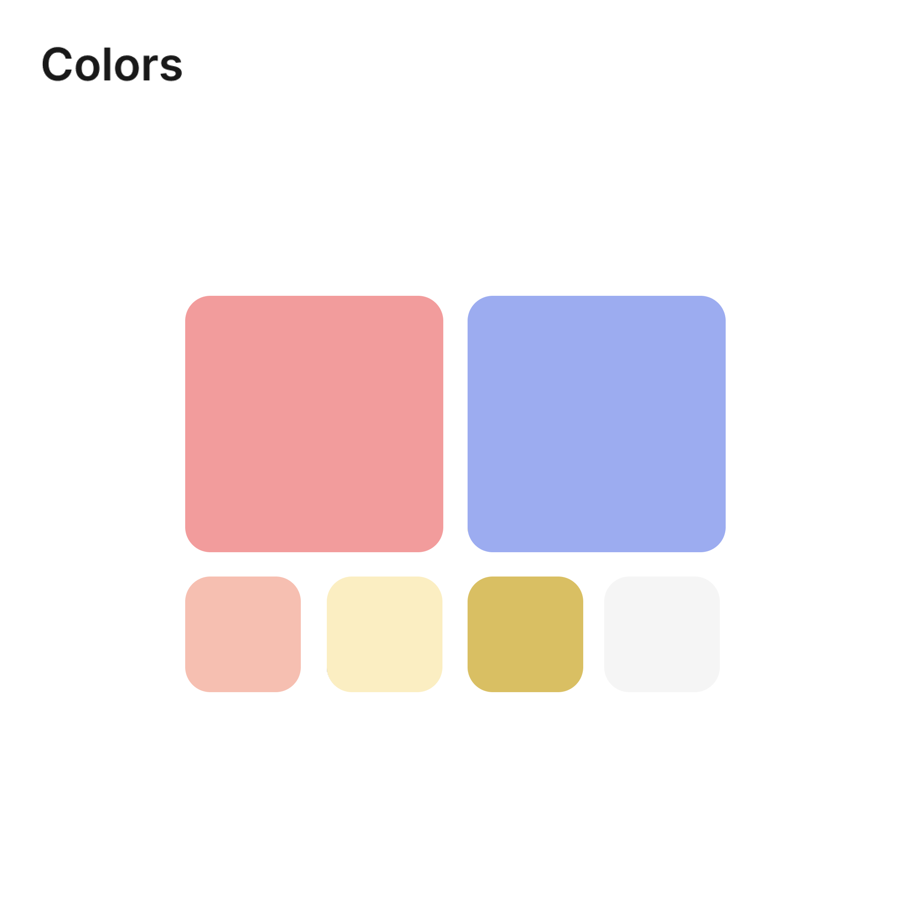
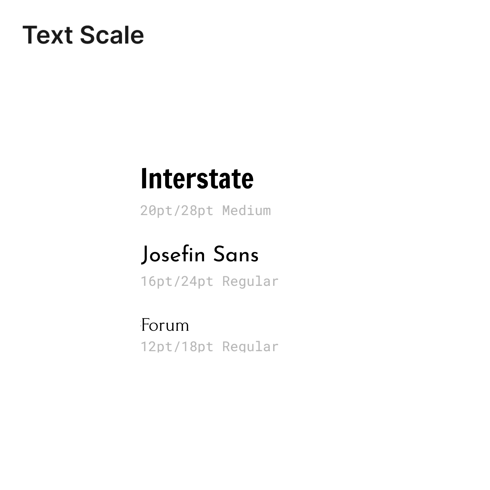
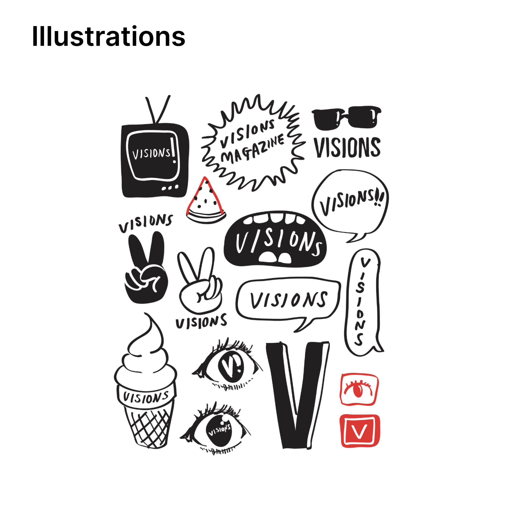

Style Guide
In developing the style guide for the website, I chose a palette that reflected the current and previous print issues of the magazine. VISIONS tends to favor art pieces that dip into issues dealing with identity, background and heritage, and reconciling cultural roots, so I tried to echo those themes in the colors I chose.


